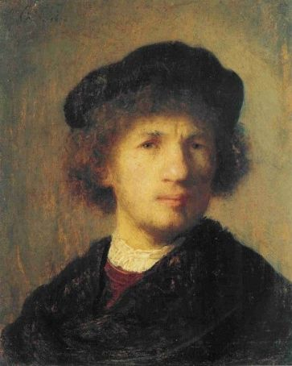

WIDELY CONSIDERED AN ARCHETYPE OF THE "RENAISSANCE MAN"
He was a man whose curiosity was equalled by his intelligence and talent.
TABLE OF CONTENTS
Introduction
Leonardo Da Vinci
How to think like Da Vinci
Master of Arts
The Anatomical Artist
The Heart matters
An Incredible Inventor
Inventions for flight
The Helicopter
The Glider
The Parachute
The Landing Gear
Inventions for War
The Tank
The Crossbow
The Machine Gun
Architectural Inventions
The Ideal City
The Robotic Knight
The Propelled Cart
The Universal Man
Quick Facts
INTRODUCTION
THE MAN WHO CHANGED THE WORLD
Jack of all trade, master of.... all trades. He was a painter, sculptor, architect, musician, scienctist, mathematician, engineer, inventor, anatomist, geologist, cartographer, botanist, and writer. His friencds described him to have extraordinary powers of invention, incredible strength and generosity, boundless, grace, an infinite mind, a majestic spirit, and in addition to all that. he was quite the looker. In his time, a person of such vast skill and personality was considered to be a polymath and ammased by many friends.
Lesser known for his ground-breaking understanding of the human body. Over the years, he found himself particualry apt at recognizing illness as well as a being's emotions-rage being a speciality. He was often considered the archetypal Renaissance man: as the great British art historian Kenneth Clark put it, he was the most relentessely curious person in the history.
Many claim he was the smartest man to ever live- a true genius- while others claim he was the most talented to ever live ... either way, one thing's for sure: he was one of a kind.
Genius is made, not born.Human beings are gifted with an almost unlimited potential for learning and creativity. Uncover your own hidden abilities, and liberate your unique intelligence- by following the example of the genius of all time,
Leonardo Da Vinci
LEONARDO DA VINCI
A curious child in Vinci
Leonardo da Vinci was born on 15th april 1452, near the village of Vinci about 25 miles west of Florence, Italy. He was the son of Ser Piero Da vinci, a prominent notary of Florence, and a local woman, Caterina.
Vinci, Province of Florence
As a baby, Leonardo stayeed with mother. When he was almost two years old he was taken from her home and rasied on his father's estate. His dad was often away on buisness, travelling to neighbouring towns and he eventually setteled in the city of Florence. it was decided that Leonardo would remain in Vinci, and he was raised by his grandparents and his uncle Francesco.

Leonardo Ser Piero Da vinci
Uncle Francesco was only sixteen years older thatn Leonardo. Though he was young, he ran the family estate. He supervised the work on the fields, where they raised olives, grapes, and wheat. As the boy and his uncle tramped through the vineyards and fields, Francesco taught Leornardo the names and uses of plants and herbs, the signs of approaching weather, and the habits of the wild animals who loved in the hills around Vinci. Francesco never tired of the curious boy's constant questions.
Leonardo never recieved any kind of formal eductaion. He did, however, recieve instruction at home in subjects such as reading, writing, and mathematics. His artistic talents were evident from an early age. Growing up in rural Tuscany, Leonardo spent much of his time outdoors, where he marvelled at the natural world. In his journals, he noted taht one of his earliest was of dream in which a bird of prey landed on his face and pushed his tail feathers between his lips. Leonardo would go to study such birds, convinced that if he coud understand the mechanics of their flight, he could design a machine that would allow humans to fly.
HOW TO THINK LIKE DA VINCI
Fill your notebook with questions, observations, contemplations, notes, pictures, drawings. Covering as many topics as you can.
Despite mistakes, disasters and failures and disappointments, Leonardo never stopped learning, exploring and experimenting.
MASTER OF THE ARTS
Leonardo's simple life in the country came to an end after his grandfather died and his uncle Francesco married. His family decided he didn't belong in the Vinci anymore and they agreed he should move in with his father and his new wife. The fourteen-year-old packed his belongings and left the countryside for the city of Florence.
It was at this stage That his father noticed Leonardo had unsual artistic talents and decided to send him to the most sought after Florentine master of the time- Andrea del Verrochio. Young Leonardo was thus apprenticed to the great artist.
Andrea del Verrochio
Those years flew by. Leornado grew up to be a handosme and stong young man. Leonardo stayed on as an assistant in Verrochio's shop, and his earliest painitng iis a product of his collaboration with his masther.
The artists in Florence developed techniques to potray objects and poeple having depth and as living in space. Leonardo learned to carefully calculate the placement of lines in his drawings and paintings to create this illusion of perspective. He used math and geometry to crete his art. Leonardo spent many hours studying the frescoes and shrines and statues of Florence. He also sought out teachers in the fields of science, mathematics and philosophy.
Leonardo Da Vinci carried a notbook with him at all times so that he could jot down ideas, impressions, and observations as they occured. He was too busy searching for truth and beauty.
THE ANATOMICAL ARTIST
He may be renowned for masterpieces such as the Mona Lisa and the Last Supper. But Leonardo is also one of the greatest anatomists the world has seen.
"A good painter has two chief objects to paint- man and his intentions of his soul", Da Vinci wrote. "The former is easy, the latter hard, for it must be expressed by gestures and the movement of the limbs." To more accurately depict those gestures and movements, da Vinci began to seriously study anatomy and dissect human body and animal bodies.
Between 1507 and 1513 he dissected more than 30 human corpses, including that of a 100-year-old man.
The notebooks, which date between 1450 and 1519, contain incredibly detailed images of the human body.
His intricate knowledge of the human body, which was years ahead of his time, is demonstrated in a collection of notebooks which he filled with detailed studies of organs, bones, vessels and muscles using new illustatrative techniques. The anatomical drawings show he was more than a match for today's medical technology.
HIS SKETCHES OF MUSCLES AND SKELETONS FORESHADOW MODERN TECHNIQUES, SUCH AS MRI SCANS AND 3D MODELLING, TO "AN ASTONISHED DEGREE"
THE HEART MATTERS
But it was the heart that appeared to particularly fire his interest, from 1507 onwards, when he had reached his 50's. In those drawings, he used his knowledge of fuids, weights, levers and engineering to try to undertand how the heart functions.
He also looked closely at the actins of the heart valves and flow of blood through them. Many of Leonardo's conclusins, such as the description of how the arterial valves close and open- letting blood flow around the herat- holds true today, but is widely not known. Contempoprary dissections of the heart show he was correct on many aspects of its functioning.
Many professors of anatomy say they still use Da Vinci's drawings to teach medical students as the accuracy of his work has rarely been surpassed.
Leonardo's insights could have made a huge difference if they had been made public earlier.
Leonardo's legacy is that we should follow the Renaissance man's example and continue to challenge, question and enquire.
AN INCREDIBLE INVENTOR
An incredible inventor of all time! Besides being a brilliant artist, Da Vinci was also a scientist, engineer and inventor and a hell of a good one which his incredible inventions clearly indicate. His most fascinating inventions are listed below. Let's look at some of the most imaginative and coolest of the designs that Leonardo sketched out in his notebook:
Inventions for flight
Inventions for war
Architectural Inventions
INVENTIONS FOR FLIGHT
He was fascinated by the flight of bats and birds and had hundredes of pages showing the motion of their wings whlist in a flight. We can see a clear parallel between the bird and bat wings he drew and his designs for flying machine.
THE HELICOPTER
Leonardo da Vicni's helicopter is a world renowned example of ability to think centuries ahead of his time. It is the first time known drawing of any helicopter-like machine. The design was drawn in 1493, 450 years earlier than an actual helicopter would take to the air.
THE GLIDER
In this image of glider, you can almost see his train of thought, this image shows an outstretched bat's with its proportions noted. He would often buy birds in local markets and study their wing structure, motion and shape, after studying he would set them free.
THE PARACHUTE
Forever fascinated by the possibility of flight, Da Vinci spent much of his time thinking up wasy to get mankimd in the air and perhaps more importantly, how to get them back down safely. Eventually, he came up with the first-ever parachute; a wooden pyramid strature draped with a piece of cloth that would slow down a person's terminal velocity as tehy fell to earth.
However, Leonardo's parachute was way more sophisticated and in 2000, the British skydiver Adrian Nicholas proved that it works by jumping with a parachute built according to the Leonardo's skectches.
THE LANDING GEAR
While he was designing and contemplating his flying machines he realised teh simple rule- "what goes up, must come down. What he came up with was a way to safely land back on solid earth is quite extraordinary- retractable landing gear.
INVENTIONS FOR WAR
During Leonardo’s lifetime Italy was comprised of several independent city states, each of whom was trying to overtake the others land and power. As a result, whichever state had a technological/military advantage over the other states was holding the trump card. Who could you turn to to invent some of the most destructive machines ever designed? Leonardo da Vinci.
One of his most fearsome and bloodthirsty patrons was Cesare Borgia. He employed Leonardo as his military architect and engineer for a couple of years during the early 1500s. Leonardo’s War Machines for Cesare Borgia would be both offensive and defensive, from the worlds first machine gun to huge drawbridges and impenetrable fortresses.
THE TANK
It was designed to be driven straight onto a battlefield and to decimate the enemy with its 360 degree cannons. As always, Leonardo took inspiration from nature for his designs, the outer shell of the tank is based on a turtle's shell.
THE CROSSBOW
The giant crossbow invention is a great example of how the way Leonardo’s artwork really brought his ideas to life. Through his illustartions, an idea, however improbable, becomes realisitic and plausible. His vivid drawings of teh giant crossbow invention also make it clear the idea behind the impressive weapon was to testify enemies into fleeing rather than fighting.
THE MACHINE GUN
The machine gun was yet another of Leonardo's deadly desings that never came to fruition, but it would have certainly destroyed many incoming enemy. Not quite the same as a modern machine gun. Da Vinci's "33-barelled-organ" allowed a set of 11 muskets to fire one after another, rotating to allow the barrels to cool off.
ARCHITECTURAL INVENTIONS
Leonardo da Vinci was an artist who painted some of the most beautiful paintings of all times. He was also a man of science who took a logical approach to solving practical problems. These two sides of Leonardo da Vinci came together in his architectural drawings.3 His drawings give us an idea of the workings of a building, not just its outward appearance.
His designs for buildings include magnificent castles, cathedrals, and chateaus. His sketches include details about important architectural elements like doors, windows, staircases, and walkways. Some of them even include out-of-the-ordinary features like a four-way staircase and a spiral staircase.
THE IDEAL CITY
The Renaissance concept of the ideal city is mainly expressed by Leonardo in his rigorously geomtric urban planning. His ideal city is characterised by the perfect integrationof a netwok of canals , which are used both of commercial purpsoses as well as a sewage system. Leonardo concieved of building as hydraulic machines which distributed water in all of the rooms of the house as well as in te artisan workshops through a mechanical lifting system. In the workshops the energy released in this way was used to drive various types of machines.
THE ROBOTIC KNIGHT
Designed for a pageant in Milan, the robotic knight consisted of a knight suit filled with geras and wheels taht were connected to an elaborate pulley and cable system. Through these mechanisms, da Vinci's robotic knights was capable of independent motion-siiting down, standing up, moving its head and lifitng his visor.
THE PROPELLED CART
Before motorised vehicles were a glimmer in someone's eye, Leonardo da Vinci designed a sel-propelled cart, capable of moving without being pushed. Among its other accomplishments, many consider Leonardo's self-propelled cart invention to be the world's first robot.
THE UNIVERSAL MAN
Many of us are good at some things, like math or science, or drawing, or writing. But Leonardo did so many things. It seems almost impossible that one person could have accomplished them all. How did he do it?
It may had something to do with the way his mind worked. The most heavenly gifts seemed to have showered on certain human beings. Sometimes supernaturally, marvellously, they all congregate in one individual. This was seen and acknowledged by all men in the case of Leonardo da Vinci, who had an indesirable grace in every effortless act and deed. His talent was so rare that he mastered any subject to which he turned his attention.
Leonardo was able to focus his mind entirely on the subject in front of him, but he was also open his mind and find connections between all of his studies. He used his whole brain: intuition and logic, imagination and observation. He trained his mind to study.
Before he went to sleep at night, Leonardo would go over everything he had worked on that day. he wrote in his notebooks, 'I have found that it is of no small benefit when you lie in bed in the dark to go over again in the imagination the outlines of the forms you have been studying; this is certainly praiseworthy exercise and useful in impressing on the memory.'
QUICK FACTS
Da Vinci's penchant for writing in reverse order or mirror image is mostly considered by many as his need to keep his works secret. It has been pointed out in some sources taht due to his left-handedness he could merely be using the, method of practical purposes as it was easier fro him to write it that way.
Guinness World Record lists Leonardo Da Vinci's Mona Lisa as having the highest insurance value for a painting in history.
Da Vinci's drawing of the Vitruvian Man is also regarded as a cultural icon.
There are records that the King Francis I, who shared a close friendship with the artist had held Da vinci's head in his arms as he deied on 2 May 1519 as Clos Luce, although this may be legend rather than a fact.
He was a gentle man who loved animals. He was a vegetarian- rare in his day. He sometimes brought live animals and let them go free.
He left several notebooks of his ideas. Bill Gates brought some of his notes for $30 million.